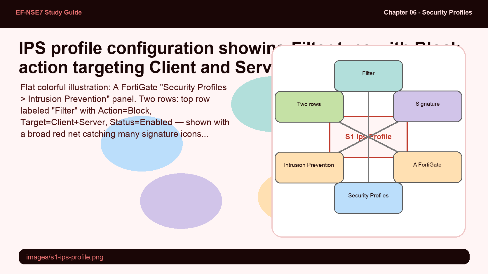
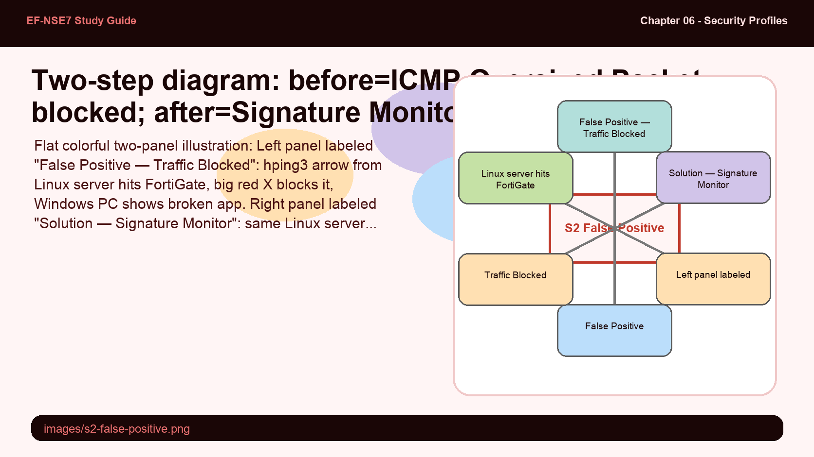
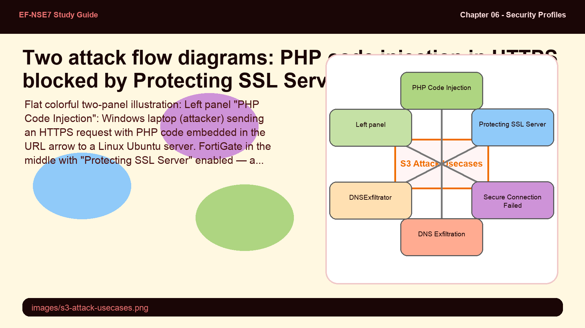
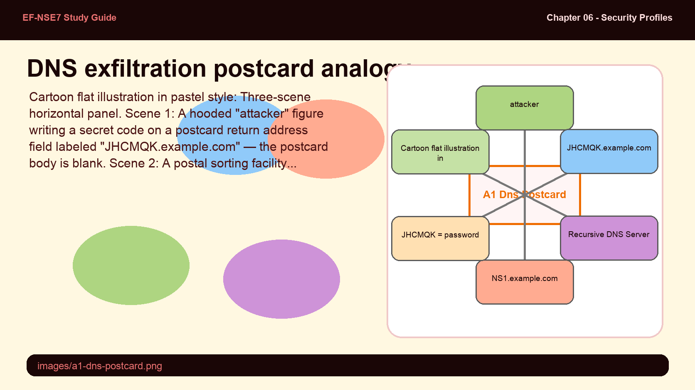
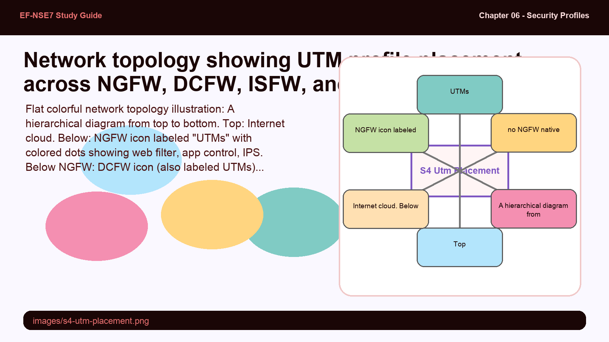

An IPS profile with Type=Filter and Action=Block targeting both Client and Server targets delivers 10,320+ signatures — and will flag and block everything that even looks suspicious, including legitimate traffic. The tradeoff between comprehensive protection and operational disruption is the core tension in IPS deployment.
- Setting an IPS filter to target both "Client" and "Server" with Action=Block and all severities enabled results in over 10,000 active signatures. What is the operational risk, and what should an admin know about their network before deploying this configuration?
- hping3 is used to test and simulate IPS attacks in this chapter. Why is an open-source tool used for ethical security testing important in an enterprise firewall course, and what does "false positive" mean in the IPS context?
IPS Profile Configuration — Filter vs Signature Types

Filter type casts a wide net across many signatures; Signature type pins down one specific CVE or attack pattern with its own action.
FortiGate IPS profiles use two entry types: Filter and Signature. A Filter entry applies an action to a broad group of signatures matching criteria (severity, protocol, OS, target). A Signature entry targets one specific IPS signature by name, allowing a granular override action that takes priority over any matching filter.
Key IPS profile settings include:
- Type: Filter (broad group) or Signature (specific CVE/signature name)
- Action: Block, Monitor, Reset, or Default (inherits the signature's default action)
- Packet Logging: Enable to capture packets triggering the signature — use only for troubleshooting false positives or creating custom signatures; avoid in long-term production due to performance impact
- Status: Enable, Disable, or Default
- Target: Client, Server, or both
hping3 is a free, open-source tool used for network security auditing, firewall testing, and simulating attack traffic. In the IPS context, it is used to generate test packets (oversized ICMP, TCP SYN floods, traceroutes via UDP) to validate IPS signatures and identify false positives. Key hping3 examples from the study guide:
# Ping using TCP SYN packets to port 80 (5 packets)
hping3 -S -p 80 -c 5 www.example.com
# Traceroute using UDP packets
hping3 --traceroute -V -1 -p 33434 www.example.com
# Check for open port 22 (1 packet)
hping3 -S -c 1 -p 22 www.example.com
# Send 8 oversized ICMP packets (654001 bytes — triggers ICMP.Oversized.Packet)
hping3 -1 -d 654001 -c 8 10.0.3.55Packet Logging: Enable) is useful for addressing false positives or creating specific signatures, but its long-term use or production deployment is explicitly warned against — it has significant performance overhead and should not be left enabled during normal operations.A false positive is when IPS blocks legitimate traffic because it matches an attack signature. The resolution is not to remove the blocking filter — it's to add a higher-priority Signature entry with Action=Monitor that allows the specific legitimate signature through while keeping the broader filter in place.
- To resolve a false positive, you add a Signature-type entry with Action=Monitor above the Filter entry. Why must the Signature entry have a HIGHER priority (ranked earlier) than the Filter entry, and what happens if you rank it lower?
- Using Action=Monitor instead of removing the blocking rule is the recommended approach. Why is completely removing the filter signature not the right solution for a false positive?
Handling False Positives — Monitor Override Strategy

The false positive fix: add a Signature entry with Action=Monitor ranked above the broad Filter=Block. Priority order is critical.
When a FortiGate IPS profile incorrectly blocks legitimate traffic (a false positive), the recommended resolution is to add a Signature-type entry with Action=Monitor above the Filter entry that is causing the block.
The false positive workflow in the study guide is illustrated with the ICMP.Oversized.Packet signature:
- A Linux server uses hping3 to send 8 oversized ICMP packets (654001 bytes, exceeding MTU) to a Windows PC at 10.0.3.55
- FortiGate's broad Filter=Block IPS profile flags these as an attack and drops the packets
- The Windows application stops working — this is the false positive
- Solution: Add a Signature entry for ICMP.Oversized.Packet with Action=Monitor, ranked at the top of the IPS signature list — above the Filter=Block entry
- FortiGate now allows the oversized packets through (and logs them), while the broader Filter continues blocking all other potential attacks
Two attack patterns illustrate why SSL inspection mode matters for IPS. PHP code injection in HTTP can be detected with certificate inspection + IPS. But over HTTPS, the same attack is invisible to IPS unless full SSL inspection with "Protecting SSL Server" is enabled. DNS exfiltration is the subtler attack — it uses plain UDP DNS queries to steal encrypted data, and requires the DNSExfiltrator.Data.Exfiltration IPS signature with full SSL inspection to detect.
- A firewall policy with IPS and certificate inspection is sufficient to detect PHP code injection in HTTP. Why is it NOT sufficient for the same attack over HTTPS, and what SSL/SSH profile option is required?
- DNS exfiltration uses unencrypted UDP DNS queries to steal data. Why does FortiGate still need full SSL inspection enabled (with DNS over TLS) to use the DNSExfiltrator.Data.Exfiltration IPS signature?
IPS Attack Use Cases — PHP Injection & DNS Exfiltration

PHP injection in HTTPS requires "Protecting SSL Server" mode. DNS exfiltration requires full SSL inspection to detect the encoding pattern.
Use Case 3 — PHP Code Injection (HTTP): An attacker from a Windows PC (10.0.3.55) accesses a Linux server running a vulnerable PHP file via HTTP. The attacker embeds PHP code in the URL (dir_command.php?arg=...echo%20system(dir)...) to execute remote commands. With IPS Type=Filter, Action=Monitor, and certificate inspection, FortiGate detects the PHP.URI.Code.Injection signature but does not block. To block: add the signature at the top of the list with Action=Block. The "connection reset" error in the browser confirms the block.
Use Case 4 — PHP Code Injection (HTTPS): The same attack over HTTPS is invisible with certificate inspection — FortiGate sees the encrypted request but cannot read the injected PHP code. The solution: create an SSL/SSH profile with the Protecting SSL Server option enabled and configure the server certificate. This mode decrypts inbound HTTPS to the protected server, allowing IPS to inspect the plaintext body. Once the SSL/SSH profile is attached to the policy, FortiGate detects and drops the PHP injection attempts.
Use Case 5 — DNS Exfiltration: DNS converts IP addresses to text using unencrypted UDP. An attacker registers a domain (e.g., NS1.example.com) and uses a malware-infected client to encode stolen data (a password) as a DNS query subdomain: JHCMQK.example.com. The recursive DNS server forwards the query to the attacker's name server, which decodes the subdomain to recover the stolen data — all using normal, unencrypted DNS traffic.
FortiGate includes the DNSExfiltrator.Data.Exfiltration IPS signature (ID: M18143) to detect and block this attack. To use it, enable full SSL inspection with multiple clients connecting to multiple servers mode. This enables FortiGate to encrypt, decrypt, and see all traffic — including DNS over TLS (port 853).
DNS exfiltration is like spelling out a secret message using only the return addresses on postcards — the postcard itself is empty, but the address encodes the data.
- DNS query subdomain — maps to the return address on the postcard (visible to all, but carries the hidden message)
- Recursive DNS server — maps to the postal sorting facility that forwards the postcard toward its destination without reading the "hidden" return address data
- Attacker's name server — maps to the attacker's mailbox that collects and decodes all the return addresses to reconstruct the message

UTM profiles (web filter, application control, IPS) are typically deployed on NGFW devices — but the right placement depends on the firewall's role in the topology. ISFW, DCFW, and DEFW each have different primary functions, and applying UTM profiles on all of them may create redundancy, increased latency, or misalignment with the device's role.
- DEFW (Distributed Enterprise Firewall) is designed for connecting remote sites to HQ — it does not natively need NGFW functions. When should you consider enabling UTM profiles on a DEFW, and what hardware recommendation applies?
- NGFW and DCFW may create redundancy when both apply content filtering and IPS. Why is this redundancy sometimes acceptable, and how does topology help manage it?
UTM Profile Placement — NGFW, ISFW, DCFW, DEFW

UTM profiles are standard on NGFW. ISFW may serve dual roles. DEFW and DCFW placement depends on operational priorities.
UTM profiles (web filtering, application control, IPS) are standard features in Next-Generation Firewalls (NGFW). The optimal placement depends on network topology and the specific role of each firewall type:
| Firewall Type | Primary Role | UTM Profile Usage |
|---|---|---|
| NGFW | Internet gateway, perimeter security | Full UTM — content filtering, IPS, app control across all internet traffic |
| ISFW (Internal Segmentation) | Segmentation, low latency, wireless LAN | Content filtering supported, but primarily configured for segmentation. May serve dual ISFW+NGFW role |
| DCFW (Data Center) | Connecting internal and external traffic to data center | Content filtering and IPS for east-west / north-south data center traffic. May coexist with NGFW (some redundancy) |
| DEFW (Distributed Enterprise) | Remote site connectivity to HQ | Does not natively need NGFW functions. If UTM is required, use midrange hardware |
An ISFW may serve a dual role as both an ISFW and an NGFW — for example, if it needs VPNs to manage sensitive traffic or requires traffic filtering for secure internet access or SD-WAN prioritization. A DCFW often performs NGFW functions and is a critical node for connecting internal and external traffic. It may use VDOMs to create virtual firewalls for segmentation.
A DEFW, designed solely for connecting remote sites to headquarters, does not necessarily need UTM profiles. If UTM profiles become necessary on a DEFW, consider using a midrange firewall with greater capabilities than the 100-900 series appliances typically used for branch connectivity.